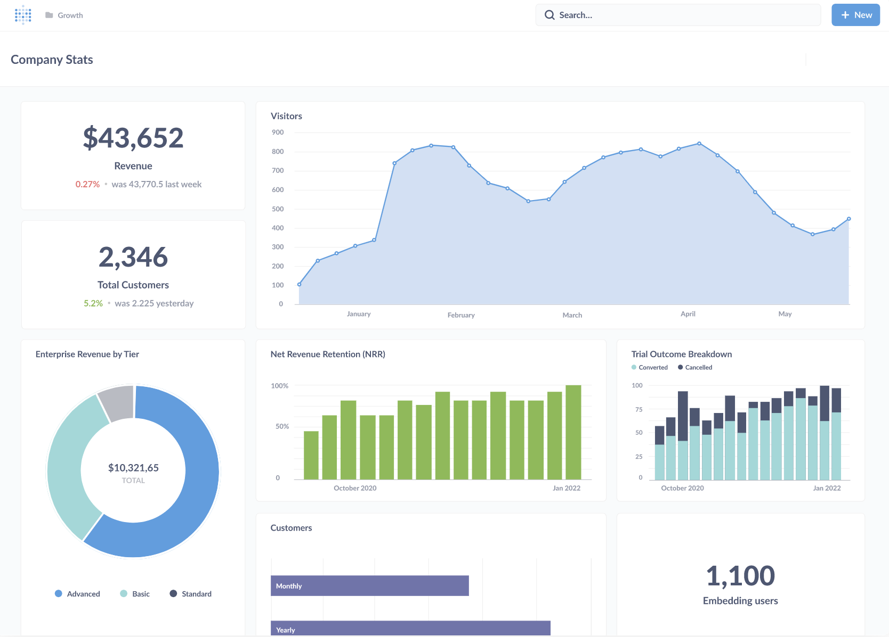

Implementación
Conexiones, modelado, permisos, colecciones, tableros, capacitación y gobierno inicial.
Implementamos, soportamos y desarrollamos soluciones analíticas con Metabase como plataforma principal, conectando fuentes y construyendo métricas que responden preguntas reales.

Conexiones, modelado, permisos, colecciones, tableros, capacitación y gobierno inicial.
Consultas, rendimiento, permisos, mantenimiento y evolución del modelo de información.
SQL, métricas, alertas, embedding e integración de analítica en portales y aplicaciones.


Exploración accesible, dashboards, alertas y analítica embebida.
Analítica administrada y escenarios embebidos de mayor escala.
Integración con el ecosistema Microsoft y modelos corporativos existentes.
Contanos fuentes, usuarios, indicadores y cómo preparan hoy la información.